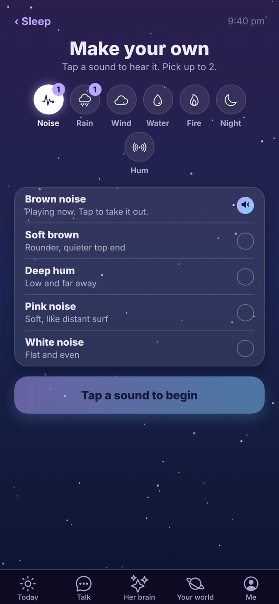

Tali HQ guide
Sleep sounds and wind down
One tap plays last night's mix or a ready made scene, or make and save your own, with a timer that fades out once you're asleep.
Sleep plays calming sounds while you drift off: rain, wind, water, fire, night sounds, hums and noise. One tap starts a scene. Mix your own if you like, save the ones you love, and set a timer that fades out at the end. It's on every plan and uses no credits. Free
Open it from Your world, Health, Sleep, or tap Sleep sounds on Today after you've shut the day down. See Shut the day down and night mode.


One tap and play#
The Sleep screen has:
- Last night's mix: one big play button for whatever you played last time, with how long it runs.
- Tap a scene: six ready made mixes that start straight away. Rain on a tin roof, Campfire by the sea, Brown noise, Storm outside, Night in the bush and Fan on.
- Your mixes: mixes you've saved. Tap one to play it, or the cross to remove it.
- Make your own: build a mix from all 35 sounds.
- How long: 15 min, 30 min, 45 min, 1 hour, 90 min or Until morning.
- A switch to have it get quieter for the last 5 minutes (when a timer is set).
The player#
While it plays, the player shows her brain asleep with the time left, or ∞ for Until morning.
- Your mix: each sound has its own slider. Move it and the mix changes as it plays. Tap Take out to drop a sound.
- Add a sound (or Swap a sound when you already have two) opens Make your own.
- Save this mix keeps it under Your mixes.
- Volume and How long work while it plays.
- +15 adds 15 minutes. The middle button pauses and resumes. ✕ stops it.
- The screen dims after 20 seconds. Tap anywhere to see the controls again.
- ‹ Sounds goes back without stopping the sound. A Now playing bar takes you back.
Make your own#

Tap a category, then tap a sound. It joins the mix and starts playing. Tap it again and it leaves. You can play two sounds at once. A number on a category shows how many you've picked from it.
| Category | Sounds |
|---|---|
| Noise | Brown noise, Soft brown, Deep hum, Pink noise, White noise |
| Rain | Tin roof, Thunderstorm, Light rain, Heavy rain, On the window |
| Wind | Mountain wind, Through the trees, Gusty, Cold night, Gentle breeze |
| Water | Ocean, Beach, Creek, River, Lake |
| Fire | Campfire, Fireplace, Crackling, Bonfire, By the sea |
| Night | Crickets, Frogs and crickets, Frogs, Night forest, Curlew |
| Hum | Ceiling fan, Box fan, Air con, Train, Plane cabin |
Your sounds, timer, volume and saved mixes are remembered on the device for your account.
Questions#
Does Sleep use credits?
No. Sleep is free on every plan.
Can I play more than two sounds?
No, two at a time. With two playing, Swap a sound lets you change one.
The sound stopped when I locked my phone.
In a browser, sound plays while the Tali HQ tab is open. Leave Tali HQ open on screen; it dims itself after 20 seconds.
My saved mixes aren't on my other phone.
Saved mixes are kept on the device you saved them on. Save the mix again on the other device.
Can I use Sleep without shutting the day down?
Yes. Open Your world, Health, Sleep any time.